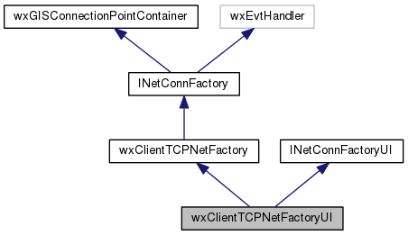
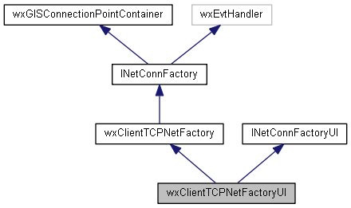

|
|
Version: 0.6.0 |


wxClientTCPNetFactoryUI Class Reference
The UI factory to create net connections. More...
#include <netfactoryui.h>
Inheritance diagram for wxClientTCPNetFactoryUI:

Collaboration diagram for wxClientTCPNetFactoryUI:

Public Member Functions | |
| virtual wxWindow * | GetPropertyPage (wxWindow *pParent) |
 Public Member Functions inherited from wxClientTCPNetFactory Public Member Functions inherited from wxClientTCPNetFactory | |
| virtual wxString | GetName (void) const |
| virtual bool | StartServerSearch () |
| virtual bool | StopServerSearch () |
| virtual void | Serialize (wxXmlNode *pConfigNode, bool bSave=true) |
| Store Properties of Factory. More... | |
|
virtual wxGISNetClientConnection *const | GetConnection (const wxJSONValue &oProperties) |
| virtual unsigned short | GetAdvPort (void) |
| virtual unsigned short | GetPort (void) |
| Public Member Functions inherited from INetConnFactory | |
| virtual bool | CanStartServerSearch () |
| virtual bool | CanStopServerSearch () |
| virtual bool | IsServerSearching () |
| Public Member Functions inherited from wxGISConnectionPointContainer | |
| virtual long | Advise (wxEvtHandler *pEvtHandler) |
| virtual void | Unadvise (long nCookie) |
Additional Inherited Members | |
| Protected Member Functions inherited from wxClientTCPNetFactory | |
| virtual void | OnBroadcastEvent (wxSocketEvent &event) |
| Protected Member Functions inherited from wxGISConnectionPointContainer | |
| virtual void | AddEvent (const wxEvent &event) |
| virtual void | PostEvent (wxEvent *event) |
| Protected Attributes inherited from wxClientTCPNetFactory | |
| wxDatagramSocket * | m_udp_socket |
| wxString | m_sAddr |
| unsigned short | m_nPort |
| unsigned short | m_nAdvPort |
| Protected Attributes inherited from wxGISConnectionPointContainer | |
| wxVector< wxEvtHandler * > | m_pPointsArray |
| wxCriticalSection | m_CritSectEvt |
Detailed Description
The UI factory to create net connections.
The documentation for this class was generated from the following files:
- /home/bishop/work/projects/nextgismanager/include/wxgis/remoteserverui/netfactoryui.h
- /home/bishop/work/projects/nextgismanager/src/remoteserverui/netfactoryui.cpp
- Generated on Fri Sep 26 2014 01:11:01 for ngm by
 1.8.6
1.8.6